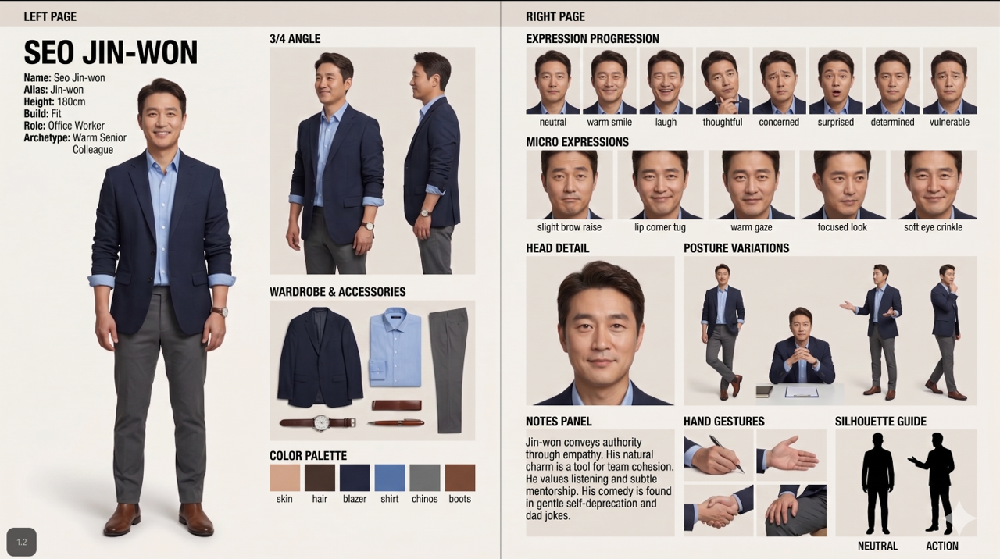

AI 이미지·영상 생성에서 캐릭터 일관성을 지키는 5단계 프로세스와 그림체 스타일 6종, 제작 전 체크리스트를 한 장에 정리했습니다.
아래처럼 원본 캐릭터 한 장을 기준으로 표정·포즈·의상·컬러 팔레트까지 확장해 하나의 시트로 완성합니다.

번호를 눌러 각 단계에서 무엇을 해야 하는지 확인하세요. 핵심은 1단계에서 만든 원본 이미지 한 장을 계속 기준으로 삼아 확장해나가는 것입니다.
카드를 누르면 구글 플로우에 바로 넣을 수 있는 프롬프트 키워드가 펼쳐집니다.
시트를 만들기 전에 아래 항목을 먼저 정해두면 프롬프트 작성이 훨씬 빨라집니다.
완성된 시트 중 가장 안정적인 한 장을 "기준 이미지"로 저장해, 이후 모든 장면 생성 시 레퍼런스 이미지로 첨부하세요. 텍스트 프롬프트 반복보다 훨씬 일관성이 좋습니다.
실존 브랜드 로고나 연예인 얼굴은 저작권 이슈가 있으니, 일반명사나 가상의 이름으로 대체하는 게 안전합니다.
한 시트에 각도가 8개 이상 들어가면 결과가 무너지기 쉽습니다. 핵심 뷰 5~7개로 압축하는 걸 추천합니다.